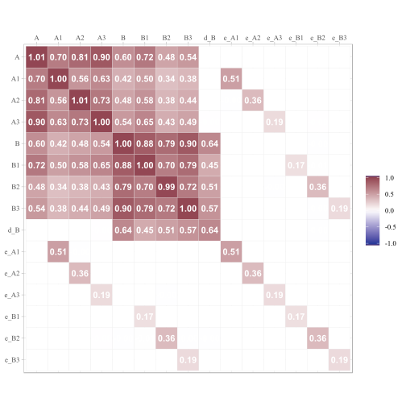
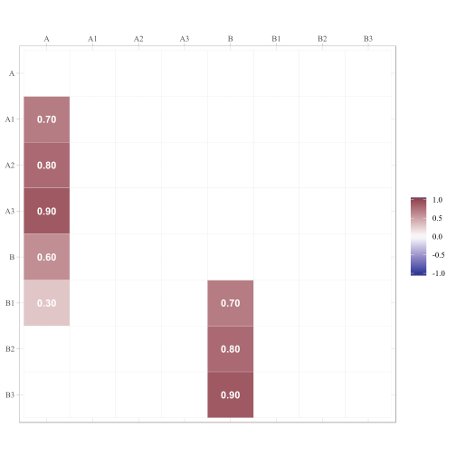
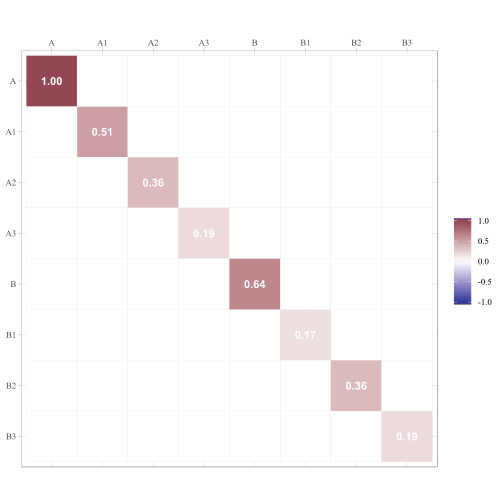

Using the simstandard package
W. Joel Schneider
2018-10-07
simstandard_tutorial.Rmd
Purpose of simstandard
In the figure below, you can see a hypothetical structural model with its standardized loadings, path coefficients, and covariances (i.e., standardized covariances = correlations).

You need to simulate multivariate normal data based on this model, but you do not know the error variances and the latent disturbance variances needed to make your model produce standardized data. It is often difficult to find such values algebraically and instead must be found iteratively.
Although lavaan::simulateData can simulate standardized data when the standardized=TRUE option is set, as of the time of this writing it is often inaccurate.
The simstandard package creates multivariate normal data using lavaan syntax.
Example
library(simstandard)
library(magrittr)
library(lavaan)
library(knitr)
options(digits = 2)
# lavaan syntax for model
m <- "
A =~ 0.7 * A1 + 0.8 * A2 + 0.9 * A3 + 0.3 * B1
B =~ 0.7 * B1 + 0.8 * B2 + 0.9 * B3
B ~ 0.6 * A
"
# Simulate data
d <- sim_standardized(m, n = 100000)
# Display First 6 rows
d %>%
head %>%
kable()| A1 | A2 | A3 | B1 | B2 | B3 | A | B | e_A1 | e_A2 | e_A3 | e_B1 | e_B2 | e_B3 | d_B |
|---|---|---|---|---|---|---|---|---|---|---|---|---|---|---|
| -1.97 | -0.65 | -1.86 | -2.15 | -1.30 | -2.07 | -1.38 | -1.77 | -1.01 | 0.45 | -0.61 | -0.50 | 0.11 | -0.48 | -0.94 |
| 0.65 | -0.46 | 1.17 | 0.55 | 0.56 | 0.98 | 1.02 | 0.54 | -0.07 | -1.28 | 0.25 | -0.13 | 0.13 | 0.49 | -0.07 |
| -1.09 | -0.71 | -0.61 | -0.53 | -0.78 | -0.27 | -0.91 | -0.83 | -0.45 | 0.02 | 0.21 | 0.33 | -0.11 | 0.48 | -0.29 |
| -2.05 | -0.51 | -1.42 | -1.08 | 0.19 | 0.21 | -1.38 | -0.23 | -1.09 | 0.60 | -0.17 | -0.51 | 0.38 | 0.41 | 0.60 |
| -1.35 | -1.11 | -1.04 | -1.55 | -0.83 | -0.61 | -1.27 | -0.66 | -0.46 | -0.09 | 0.10 | -0.71 | -0.30 | -0.01 | 0.10 |
| 1.36 | 0.69 | -0.29 | 1.43 | 1.81 | 0.94 | 0.68 | 1.63 | 0.89 | 0.15 | -0.90 | 0.09 | 0.51 | -0.53 | 1.23 |
Because the data are standardized, the covariance matrix of the observed and latent variables should be nearly identical to a correlation matrix. The error and disturbance terms are not standardized.
Let’s make a function to display correlations and covariance matrices:
ggcor <- function(d) {
require(ggplot2)
require(tibble)
require(tidyr)
require(dplyr)
as.data.frame(d) %>%
rownames_to_column("rowname") %>%
gather(colname, r, -rowname) %>%
mutate(rowname = forcats::fct_rev(rowname)) %>%
ggplot(aes(colname, rowname, fill = r)) +
geom_tile(color = "gray90") +
geom_text(aes(label = formatC(
r, digits = 2, format = "f"
)),
color = "white", fontface = "bold") +
scale_fill_gradient2(NULL,
na.value = "gray20",
limits = c(-1.01, 1.01),
high = "#924552",
low = "#293999"
) +
coord_equal() +
scale_x_discrete(NULL,position = "top") +
scale_y_discrete(NULL) +
theme_light(base_family = "serif")
}
To return only the observed variables
d <- sim_standardized(m,
n = 100000,
latent = FALSE,
errors = FALSE,
disturbances = FALSE)
# Display First 6 rows
d %>%
head %>%
kable() | A1 | A2 | A3 | B1 | B2 | B3 |
|---|---|---|---|---|---|
| 2.0 | 0.96 | 1.28 | 1.03 | 0.93 | 0.26 |
| 1.3 | 1.26 | 0.64 | 0.42 | -0.35 | 0.26 |
| 1.3 | 1.16 | 0.61 | 0.19 | -0.11 | -0.18 |
| -1.2 | 0.16 | -0.39 | 0.53 | 0.29 | 1.37 |
| -1.1 | -1.16 | -0.79 | -1.95 | -1.53 | -1.62 |
| 1.5 | 0.24 | 1.56 | 0.68 | -1.04 | -1.33 |
Comparison with lavaan::simulateData
I love the lavaan package. However, one aspect of one function in lavaan is not quite right yet. lavaan’s simulateData function is known to generate non-standardized data, even when the standardized parameter is set to TRUE. See how it creates variables B1, B2, and B3 with variances much higher than 1.
library(lavaan)
d_lavaan <- simulateData(
model = m,
sample.nobs = 100000,
standardized = TRUE)
cov(d_lavaan) %>%
ggcor
Inspecting model matrices
You can inspect the matrices that simstandard uses to create the data by calling simstandardized_matrices.
The A matrix contains all the asymmetric path coefficients (i.e., the loadings and the structural coefficients). These coefficients are specified in the lavaan model syntax.

The S matrix contains all the symmetric path coefficients (i.e., the variances and correlations of the observed and latent variables). For endogenous variables, the variances and correlations refer to the variance and correlations of the variable’s associated error or disturbance term. In this case, A is the only endogenous variable, and this its variance on the diagonal of the S matrix is 1.

Factor scores
If you want to estimate factor scores using the regression method (i.e., Thurstone’s method), set the `factor_scores = TRUE’
library(dplyr)
library(tibble)
library(kableExtra)
library(corrr)
library(ggplot2)
m <- "
A =~ 0.9 * A1 + 0.8 * A2 + 0.7 * A3
"
sim_standardized(
m,
n = 100000,
observed = FALSE,
factor_scores = TRUE
) %>%
head() %>%
kable() %>%
kable_styling(bootstrap_options = c("striped","responsive"))| A | e_A1 | e_A2 | e_A3 | A_FS | e_A1_FS | e_A2_FS | e_A3_FS |
|---|---|---|---|---|---|---|---|
| 0.08 | 0.62 | -0.73 | -0.29 | 0.18 | 1.21 | -1.36 | -0.50 |
| -3.04 | 0.11 | 0.53 | -0.23 | -2.49 | -0.89 | 0.15 | -0.87 |
| -1.18 | -0.59 | 0.13 | 0.36 | -1.29 | -1.14 | 0.36 | 0.61 |
| -1.27 | 0.14 | -0.31 | 0.23 | -1.07 | -0.08 | -0.78 | 0.13 |
| -0.06 | 0.52 | -0.20 | -1.11 | 0.01 | 1.06 | -0.43 | -1.63 |
| 1.07 | 0.51 | 0.04 | -0.94 | 1.09 | 1.14 | 0.04 | -1.34 |